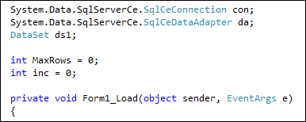
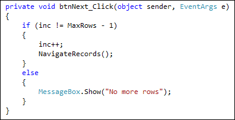
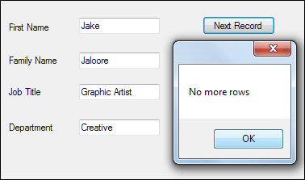
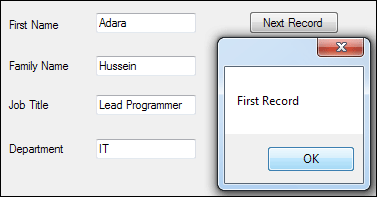

Scrolling through the database
The first thing we'll do is to allow users to move forward through each record in our database. This is done with just a bit of programming logic, and manipulating the Row value in the Dataset.
To make this work, we need to set up a few variables. So return to your coding window, and add the following two variables outside the form load event, just below the three you already have:
int MaxRows = 0;
int inc = 0;

The MaxRows variable will hold how many Rows there are in the Dataset. This is so that we don't go past the last record when the Next Record button is clicked. If we try to go past the last record, the programme will crash! (We'll add the button shortly.)
The inc variable will be used to change the current Row number.
To get at the number of Rows in the DataSet, you can use the Count property of Rows. Add this code to your form load event, just below your call to NavigateRecords( ):
MaxRows = ds1.Tables["Workers"].Rows.Count;
Instead of specifying a particular Row in square brackets, this time we type a dot, and then select Count from the IntelliSense list. This will return how many rows there are in this particular Dataset.
When the form loads, then, MaxRows will contain a count of how many Rows are in the Dataset called ds1.
For the NavigateRecords method, we need to make one slight change. At the moment, we have this code:
DataRow dRow = ds1.Tables["Workers"].Rows[0];
But this will point to Row[0] all the time. We can use the inc variable here. What we'll do is to increment the value when the Next Record button is clicked, adding 1 to inc every time.
Change the line to this:
DataRow dRow = ds1.Tables["Workers"].Rows[inc];
The only change is in between the square brackets of Rows.
Run your programme to test if it works. You should still see the first record displayed in your text boxes.
Stop your programme and return to the design environment. Add a button to your form. Change the Text property to Next Record. Change the Name property to btnNext.
Double click your button to get at the coding window. For the code, we need to check what is inside of the MaxRows variable and make sure we don't go past it. We also need to increment the inc variable. It is this variable that will move us on to the next record.
Add the following if statement to your button:

The first line of the If Statement says "If inc does not equal MaxRows minus 1". If it doesn't then we increment the inc variable and call NavigateRecords. But can you see why we need to say MaxRows - 1? It's because of the Rows[inc] line in our NavigateRecords method. The count for Rows starts at zero. So if we only have 4 records in the database, the count will be for 0 to 3. MaxRows, however, will be 4. If we don't deduct 1, the programme will crash with an error: IndexOutOfRange.
If the MaxRows is reached, then we can display a message for the user.
Run your programme and test it out. You should be able to move forward through your database. Here's what your form should look like when the last record is reached:

Move Backwards through the Database
We can use similar code to move backwards through the records in the database.
Add another button to your form. Change the Text property to Previous Record.
Change the Name property to btnPrevious.
Double click your new button to get at the coding window. Now add the following:
if (inc > 0)
{
inc--;
NavigateRecords();
}
else
{
MessageBox.Show("First Record");
}
The if statement is now only checking the inc variable. We need to check if it's greater than zero. If it is, we can deduct 1 from inc, and then call our NavigateRecords methods. When the form loads, remember, inc will be 0. So if we tried to move back one record after the form first loads the programme would crash. It would crash because we'd be trying to access Rows[-1].
Run your programme and test it out. Click you Previous Record button and you should see this:

Click both of your buttons and make sure you can move back and forward through the records. You programme shouldn't crash!
Jump to the Last Record in your Database
To move to the last record of your database, you only need to make sure that the inc variable and MaxRows have the same value.
Add a new button to your form. Set the Text property as Last Record, and the Name property as btnLast. Double click, and add the following code:
if (inc != MaxRows - 1)
{
inc = MaxRows - 1;
NavigateRecords();
}
The If Statement again checks that inc is not equal to MaxRows minus 1. If it isn't, we have this:
inc = MaxRows - 1;
MaxRows minus 1 would equal 3 in our four record database. Because Rows[inc] goes from 0 to 3, this is enough to move to the last record after the call to NavigateRecords.
Jump to the First Record in your Database
To move to the first record in the database, we only need to set inc to zero.
Add another button to your form. Change the Text property to First Record. Change the Name property to btnFirst. Double click your new button and add the following code:
if (inc != 0)
{
inc = 0;
NavigateRecords();
}
This just checks to see if inc isn't already zero. If it isn't, we set the inc variable to 0. Then we call the NavigateRecords method.
Run your programme and test it out. You should now be able to move through the records in your database without the programme crashing. What we'll do now is to allow the user to add a new record to the database. This is more complex than the navigation, so you may need to pay close attention!